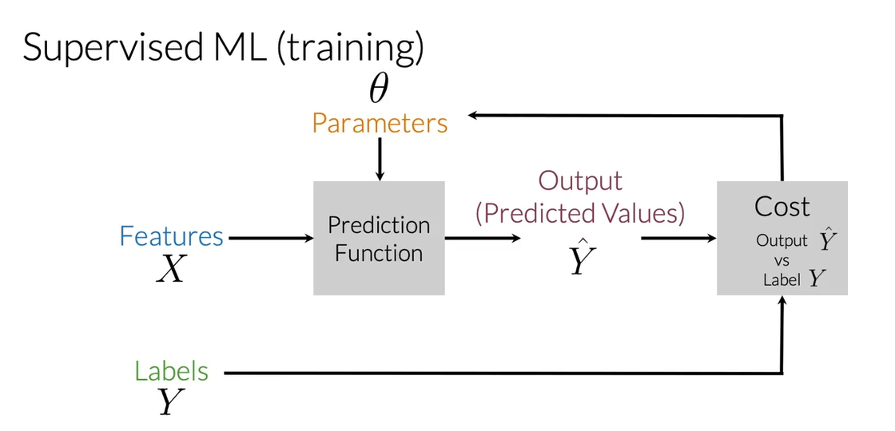
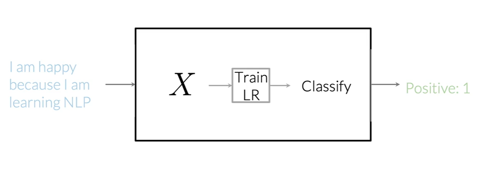

tweets = ['This dog is amazing but I prefer a corgi',
'Donald Trump hair-dresser should be in jail',
'Roses are red, the sky is blue and machine learning is not a black box']Logistic Regression
Supervised ML & Sentiment Analysis
In supervised machine learning, you usually have an input \(X\), which goes into your prediction function to get your \(\hat{Y}\) You can then compare your prediction with the true value \(Y\). This gives you your cost which you use to update the parameters The following image, summarizes the process.

To perform sentiment analysis on a tweet, you first have to represent the text (i.e. “I am happy because I am learning NLP”) as features, you then train your logistic regression classifier, and then you can use it to classify the text.

Note that in this case, you either classify 1, for a positive sentiment, or 0, for a negative sentiment.
Text Representation.
Sparse Representation.
Given a set of tweets:
A vocabulary \(V\) will be formed by all the different words available in the tweet list. Lets imagine that our vocabulary is just composed of the unique words of our first tweet. In this case we could encode the second tweet as follows:
sparse_vector = []
vocabulary = tweets[0].split(' ')
for i in tweets[2].split(' '):
if i in vocabulary:
sparse_vector.append(1)
else:
sparse_vector.append(0)The resulting vector will be \([0, 0, 0, 0, 0, 1, 0, 0, 0, 0, 1, 0, 1, 0, 0]\) which is a sparse vector as it mostly contain 0s. It is easily seen that this is not scalable as well as not memory efficient. Basically the resulting vectors will have a size of \(n=\module{V}\)
Negative and Positive Frequencies.
Let’s imagine that now we have the following tweets:
tweets = ['I am happy because I am learning NLP',
'I am happy',
'I am sad, I am not learning NLP',
'I am sad']The unique vocabulary can be obtained by:
all_text = ' '.join(tweets).lower()
import string
all_tweets = all_text.translate(str.maketrans('', '', string.punctuation))
# Split the combined string into individual words
words = all_tweets.split()
# Convert the list of words into a set to get unique words
unique_words = set(words)
print(unique_words){'am', 'sad', 'not', 'i', 'nlp', 'because', 'happy', 'learning'}For this particular example of sentiment analysis, you have two classes. One class associated with positive sentiment and the other with negative sentiment. So taking your corpus, you’d have a set of two tweets that belong to the positive class, and the sets of two tweets that belong to the negative class. Let’s take the sets of positive tweets. Now, take a look at your vocabulary. To get the positive frequency in any word in your vocabulary, you will have to count the times as it appears in the positive tweets and viceversa for the negative frequency.